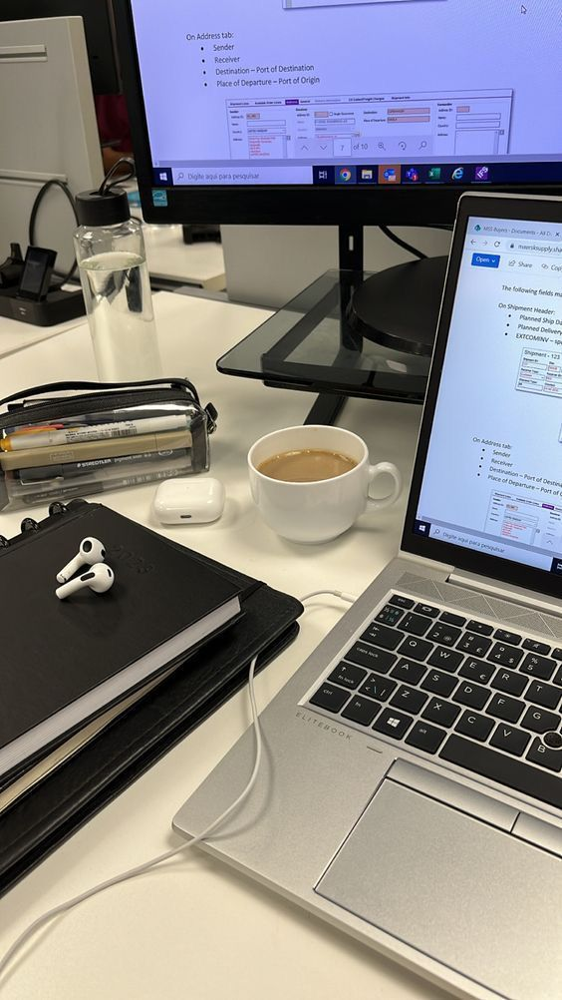

Hi there, I'm Janet 👋
Peru

Conocí gdintelectual gracias a un compañero que por casualidad del destino lo conocí un dia cualquiera. Gdintelectual me a brindado la oportunidad de conocer a gente de todas las mentalidades. Conocer personas y oportunidades. Amo la programación web, sobre todo el diseño de paginas.
Soy desarrolladora de sistemas de profesión y jamás dejaria mi pasión. Priorizo los sentimientos humanos y sobre todo, la paz mental. Veo un futuro prospero y lleno de esperanza para mi vida y la de mis compañeros. Jamás pensé ver gdintelectual con su propia pagina web, y como reza la introduccion, es el espacio en la que puedo compartir mis ideas y simplemente ser uno mismo en la red. Me encanta viajar y relacionarme con personas agradables <3
INFP.